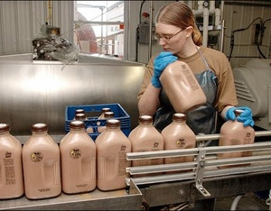

It’s hard to put a price on the value of fresh, local, hormone- and antibiotic-free milk that actually tastes like milk. When you know local dairy farmers who put their hearts and souls into their businesses and their communities, it’s heartbreaking to watch the current economic situation threaten their livelihoods.
We recently caught up with longtime dairy farmer Tim Iwig of Iwig Family Dairy in Tecumseh, Kan., and picked his brain on what it’s like to produce and sell fresh, local milk at a time that’s been particularly hard on dairy farmers.
Tell us about your dairy, and how you got started.
I always wanted to milk cows. This dairy has been run by my family since 1910, and I watched my dad operate it with his two brothers until 1972. I wanted my own dairy business, but I was only 12 years old, so I practiced with dairy cows through the 4-H program.
I began my milk production business in 1983 and expanded to a bottling and retail service in 2005. My wife, Laurel, and I have been producing high-quality bottled milk, cream, butter, ice cream and ground beef to our community ever since.
Because it’s local, it’s fresher. Plus, we bottle our milk in glass - plastic containers contain unwanted chemicals that end up in the milk, and they make the milk taste like plastic. Glass also keeps the milk colder and cuts down on waste, because we wash and reuse the bottles.
Our cows are happy, healthy and well cared for. Our pasteurization is done at low temperatures for longer periods of time; a method that makes an enormous difference in the quality and taste of our products. All of our milk is free of artificial hormones such as rbST and rbGH, which are used to increase milk production in some herds and are rumored to have adverse effects on both human and cow health. Our milk is also free of antibiotics.
How much should one expect to invest to get started?
I started with my dad’s farm in 1983. I didn’t have to invest much, just about $40,000, but if you’re going to buy a farm and start from scratch, you can expect to spend close to half a million dollars or more. After that, there are some costs to maintain the herd’s health, but you can save a lot of money in vet bills if you learn how to take care of things such as calving yourself. The majority of my regular expenses come from the feed.
What types of housing and equipment would you consider essential?
You need the milking parlor and the milking equipment for the twice-daily milkings; a separator (which separates the cream from skim so we can make skim milk); a homogenizer to break the fat molecules down and keep them from rising to the top; a 500-gallon vat pasteurizer; a range of cooling equipment; a bottle filler; and a walk-in cooler.
In my northeast Kansas location, the wide range of temperatures requires a wide range of housing needs. We need to keep the cows shaded and cool during the summer, and we also need shelter to keep the north wind off them in the wintertime. In the warmer months, the milking herd is allowed out on grass and to shade trees for part of the day. This keeps them cool and comfortable, and comfortable cows are happy, high-producing cows.
How much land is required for a small scale dairy?
I’m comfortable with 80 to 100 cows on my 158 acres. If you want to produce your own feed and have a full pasture-based operation, you’ll need at least 400 to 500 acres. I produce about 20 to 30 percent of the roughage, and I buy the rest of their hay and grain.
You’ve got the land, the cows, the equipment, the bottles ... how do you sell the milk?
I just started making phone calls to area grocery stores. They were uncertain at first, but they came around when they saw how popular our milk was. We started out with a lot of country stores in the rural parts of the area, too, and they were eager to try our products out. We also schedule events at the farm, such as fall festivals and farm tours. These events have helped bring in sales, but you need to have them regularly in order to make it a long-term benefit.
What are the best dairy cow breeds?
I have Holsteins, Jerseys and crosses of the two. I started out with Holsteins because they produce the most milk of any breed. I added the Jerseys because they have the most vigor, and they’re the most reproductive. They also calve well, and so they cross-breed well with the Holsteins. The “hybrid vigor” provided by the crossbreeding leads to cows that are healthy and fertile, and have great longevity.
How do you get customers to return the glass bottles to you?
When we deliver milk to the store, we charge for the milk, and we charge the store for the bottles. Then, when they sell the milk to customers, the stores also charge for both. When the customer returns their bottles to the store, they get the glass charge back, and when we pick up the bottles, we give credit to the stores. (The process is a lot cheaper and simpler if customers come directly to the farm store to get the products.)
We sell half gallon, pint and quart bottles because you can’t get gallon-size bottles in glass.
Times are tough for small-scale dairies. Do you have any advice?
We started bottling in 2005. In the first quarter of 2008, we reached the level at which we needed to be profitable. Then fuel prices went high. Even though we operate in a small radius, we’re paying $4.50 a gallon for diesel fuel. Our customers are also paying a high price for gas, and looking for ways to save money.
Then grain prices spiked, which increased my feed bill astronomically. Then the economy crashed, along with the milk price. Our export markets for milk have stopped. When we were shipping a percentage of milk out of the country all the time, we were keeping our supply tighter and the price higher. There’s too much milk right now, and the prices are too low to keep a farmer’s family fed and clothed. We’re looking for investors to help us make it through.
What keeps you going?
I love my job. Dairy farming is all I’ve ever wanted to do. I know that I produce a superior product to that from industrial dairies, and I know that I have a lot of loyal customers that would hate to see it all disappear. Our customers know that by supporting the Iwig Family Dairy, they’re doing a great thing for the local economy, and for their health. Many tell us that their children are drinking more milk and less soft drinks since they started buying our milk. Plus, this farm has been in my family for generations, and I’m going to do everything I can to keep it up and running for generations to come.
What would you advise those who would like to start their own small dairy?
If you’re already producing milk, and want to start your own bottling company, you need to be in the right kind of consumer demographic to make it work. And it needs to be a large consumer demographic. Rochester, Minn; Boulder, Colo.; Seattle; Minneapolis - think about setting up shop near the right kind of city where people are willing to pay extra for the healthier, local option. Consider the area’s climate as well - a place without temperature extremes would be ideal.
If you’re thinking about starting from scratch with a straight production operation, don’t do it unless someone is going to give you the land and/or the feed. Not right now.
|
 RICHARD GWIN/LAWRENCE JOURNAL-WORLD For northeast Kansas and beyond, Iwig Family Dairy produces some of the best fresh, local milk you’ll ever taste - including chocolate milk. Here, Courtney Iwig, daughter of the farm’s owner Tim Iwig, gains hands-on knowledge of the work involved in running a milk production and bottling business. |
|
|